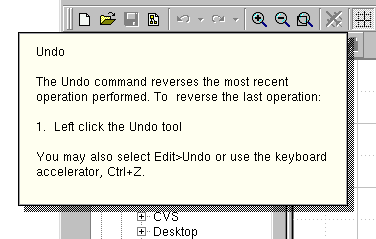

The QWhatsThis class provides a simple description of any widget, e.g. answering the question "what's this?" More...
#include <qwhatsthis.h>
Inherits Qt.
What's This help lies between tool tips and fully-blown online help systems:
QWhatsThis, then, offers a single window with a single explanatory text, which pops up quickly when the user asks "what's this?", and goes away as soon as the user does something else. There are two ways to make QWhatsThis pop up: Click a "What's This?" button and then click on some other widget to get help for that other widget, or press Shift-F1 to get help for the widget that has keyboard focus. But you can also connect a "what's this" entry of a help menu (with Shift-F1 as accelerator) to the whatsThis() slot of a QMainWindow, then the focus widget does not have a special meaning.
QWhatsThis provides functions to add() and remove() What's This help for a widget, and it provides a function to create a What's This button suitable for typical tool bars.

Futhermore, you can create a dedicated QWhatsThis object for a special widget. By subclassing and reimplementing QWhatsThis::text() it is possible, to have different explanatory texts depending on the position of the mouse click.
If you widget needs even more control, see QWidget::customWhatsThis().
Other Qt classes support What's This help directly. Keyboard accelerators, for example, can also provide explanatory text with access through both they acceleration key itself or an attached menu item. See QAccel::setWhatsThis() for details.
The explanatory text can be both rich text or plain text. If you specify a rich text formatted string, it will be rendered using the default stylesheet. This makes it also possible to embed images. See QStyleSheet::defaultSheet() for details.
See also: QToolTip.
Constructs a dynamic What's This object for widget.
[virtual]Destroys the object and frees any allocated resources.
[static]Adds text as What's This help for widget. If the text is rich text formatted, it will be rendered with the default stylesheet QStyleSheet::defaultSheet().
See also: remove().
[static]Enters What's This? question mode and returns immediately.
What's This will install a special cursor and take over mouse input until the user click somewhere, then show any help available and switch out of What's This mode. Finally, What's This removes its cursor and help window and restores ordinary event processing. At this point the left mouse button is not pressed.
See also: inWhatsThisMode() and leaveWhatsThisMode().
[static]Returns whether the application is in What's This mode.
See also: enterWhatsThisMode() and leaveWhatsThisMode().
[static]Leaves What's This? question mode
This function is used internally by widgets that support QWidget::customWhatsThis(), applications usually never have to call it. An example for such a kind of widget is QPopupMenu: Menus still work normally in What's This mode, but provide help texts for single menu items instead.
If text is not a null string, then a What's This help window is displayed at the global position pos of the screen.
See also: inWhatsThisMode() and enterWhatsThisMode().
[static]Removes the What's This help for widget.
See also: add().
[virtual]This virtual functions returns the text for position p in the widget this What's This object documents. If there is no What's This text for a position, QString::null may be returned.
The default implementation returns QString::null.
See also: qml().
[static]Returns the text for widget, or a null string if there isn't any What's This help for widget.
See also: add().
[static]Returns a pointer to a specially configured QToolButton, suitable for use to enter What's This mode.
See also: QToolButton.
Search the documentation, FAQ, qt-interest archive and more (uses
www.troll.no):
This file is part of the Qt toolkit, copyright © 1995-99 Troll Tech, all rights reserved.
| Copyright © 1999 Troll Tech | Trademarks | Qt version 2.0.2
|